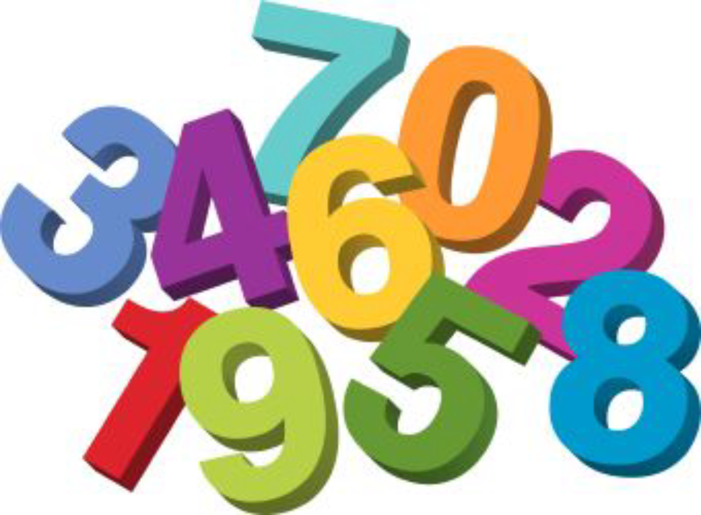

Problem
I am a three-digit number. All of my digits are different. My digits are all even numbers greater than 0 and less than 8. If you read my digits from left to right, they are not always increasing. The hundreds digit is the smallest digit. What number am I?
I am a four-digit number. All of my digits are different. If the digits appeared in the same order on a (12 hour) digital clock, it would show a valid time. The sum of the hours digits of this time is equal to the difference between the larger minutes digit and the smaller minutes digit of this time. The ones (units) digit is 8. What number am I?
I am a four-digit number. All of my digits are odd. The product of the thousands digit and the hundreds digit is the same as the two-digit number equal to my last two digits. The hundreds digit and the ones (units) digit are the same number. Exactly one of my digits is a 1. What number am I?
Solution
The even numbers that are greater than 0 and less than 8 are: 2, 4, and 6. Since this is a three-digit number and the digits are all different, all three of these numbers must be digits in the number. Since the hundreds digit is the smallest digit, the number must start with 2. Since the digits are not always increasing, the number cannot be 246. The only other possibility is the number 264. So the number must be 264.
Since this is a four-digit number that is a valid time on a digital clock, the hours digits would be the thousands digit and the hundreds digit, and the minutes digits would be the tens digit and the ones (units) digit. Since this is a four-digit number, the thousands digit cannot be 0. It follows that the thousands digit must be a 1. Since the digits must all be different, the hundreds digit could be either a 0 or a 2. If the hundreds digit is a 0, that would mean the difference between the minutes digits must be \(1 + 0 = 1\). Since the ones digit is 8, that would mean the tens digit would have to be either 7 or 9. However, 78 and 98 are not valid minutes on a digital clock. So, the hundreds digit must be a 2. This means the difference between the minutes digits must be 3. The only possibility is that the tens digit is 5. So the number must be 1258.
Since all the digits are odd, only one of these digits is 1, and the hundreds digit and ones (units) digit are the same, then these two digits must be one of 3, 5, 7, or 9. Also, exactly one of the thousands digit or tens digit must be a 1. The product of the thousands and hundreds digit must be a two-digit number. However, if the thousands digits was a 1, then the product of these two digits would be a single-digit number. This means the tens digit must be a 1. So, we need to find two odd, single digit numbers that give a product of either 13, 15, 17, or 19. The only number in this list that can be factored into the product of two digits is 15. So the two-digit number equal to the last two digits must be 15 and the hundreds digit must be 5. Since \(3 \times 5 = 15\), the thousands digit must be 3, which is an odd number. So the number must be 3515.
Teacher’s Notes
When we add two positive numbers together, we know that the sum of those numbers will also be positive. However, when we subtract one positive number from another positive number, the answer may be positive, it may be 0, or it may be a negative number.
In part B) of this problem we were given information about the sum of two digits and the difference of two other digits (all of which were different). In order to guarantee that the difference we were considering was a positive number the problem included the phrase:
“the difference between the larger minutes digit and the smaller minutes digit”.Another way to guarantee a non-negative result is to use the absolute value function. The absolute value of a number is denoted using vertical bars, and is formally defined as:
\[|x | = \begin{cases} ~~x & \text{ for } x \geq 0 \\ -x & \text{ for }x < 0 \\ \end{cases}\]
What this really means is that the absolute value of a number is the value of that number without regard to its sign. For example, \(| 5 |= 5\) and \(| -5 |= 5\).
So if we wanted to guarantee an non-negative result from a subtraction, we could ask for the absolute value of the difference. In other words, \(|x - y |\) always results in a non-negative number no matter what the values we have for \(x\) and \(y\). Knowing about absolute value, an alternative statement for this problem could have been:
“The sum of the hours digits of this time is equal to the absolute value of the difference between the minutes digits.”